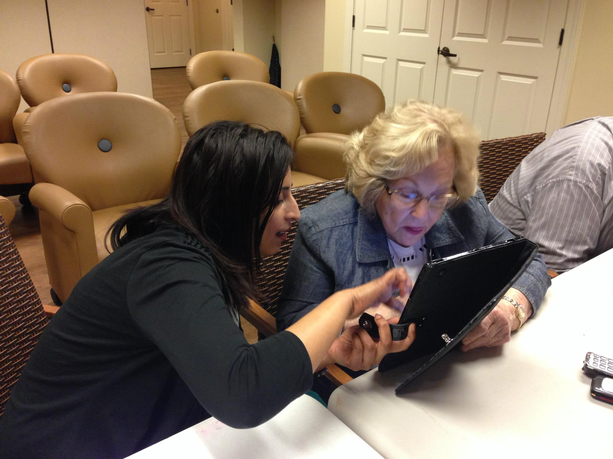

Classroom instructors
Lead bite-sized lessons, encourage questions, and help students reach each class goal.

Help older adults build digital confidence and stay connected. No tech expertise is required.
Volunteers are a vital part of TechSmart’s work with older adults across Greater Atlanta.
Lead bite-sized lessons, encourage questions, and help students reach each class goal.
Sit beside learners during practice so no one gets stuck or feels left behind.
Help at community events, fundraising, or committees if teaching is not the right fit.
TechSmart partners with libraries, community centers, houses of worship, and retirement communities.
Classes are about 60 minutes and usually include 10 to 20 students, many age 70 and older.
Lessons use simple language, repetition, and handouts so new skills are easier to remember.
Students practice email, texting, photos, rides, shopping, and using Android or iPhone devices.
Tap a question to read more. You do not need to be a technology expert to volunteer.
No. Patience and a friendly manner matter most. TechSmart provides training and support for classroom volunteers.
Send the form on this page. Official volunteers also register through Hands On Atlanta, attend orientation, and then choose upcoming opportunities.
Yes. You can support events, outreach, fundraising, or a committee. Choose “Not sure yet” and we will help you find a fit.